Sempre próximos, sempre confiáveis, sempre para a nossa gente
O CEDIM constrói uma história baseada em confiança, precisão e evolução constante. São mais de 26 anos oferecendo diagnósticos que ajudam médicos e pacientes a tomarem decisões mais seguras.
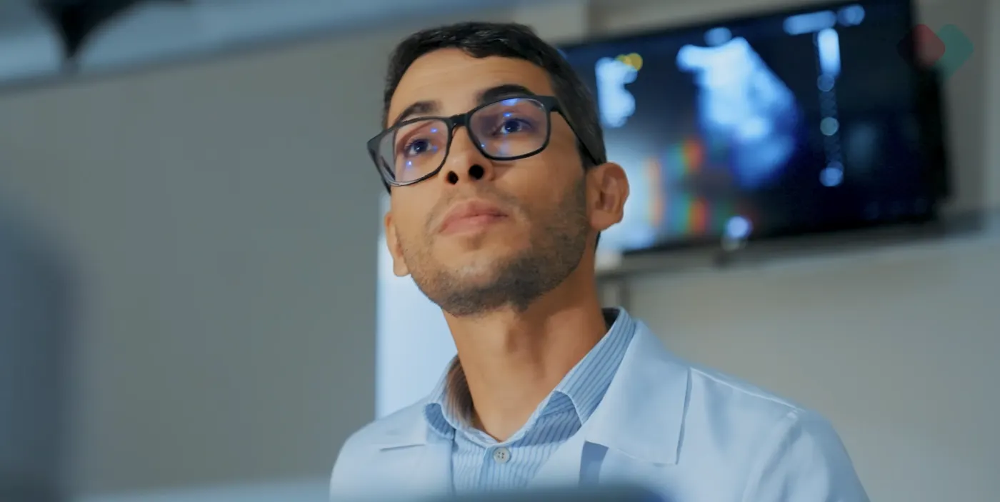
Tecnologia, precisão e confiança
Exames de imagem, cardiológicos e laboratoriais no mesmo lugar, em Cacoal:
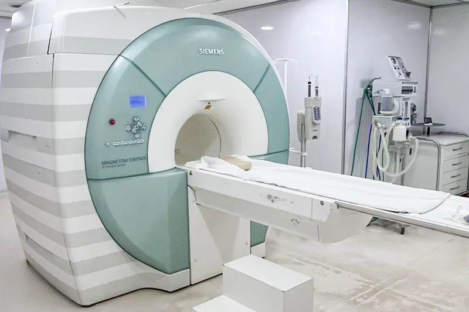
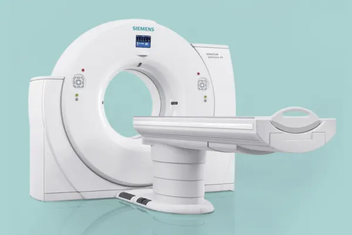
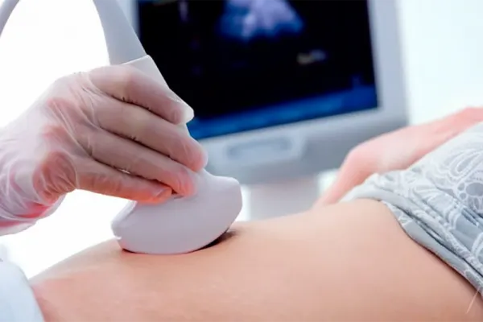
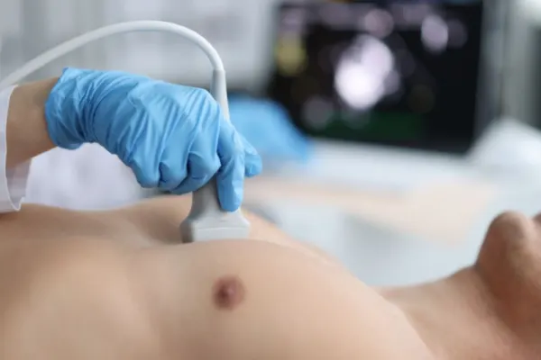
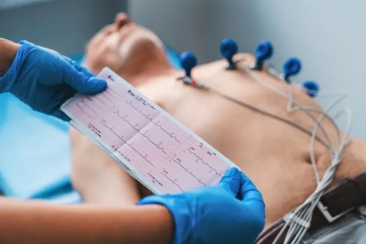
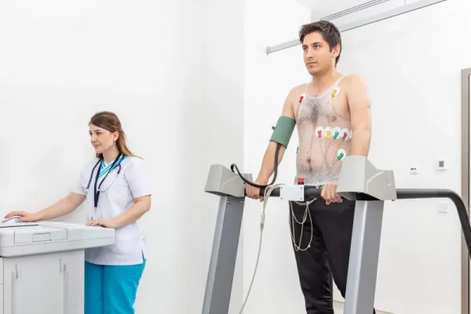
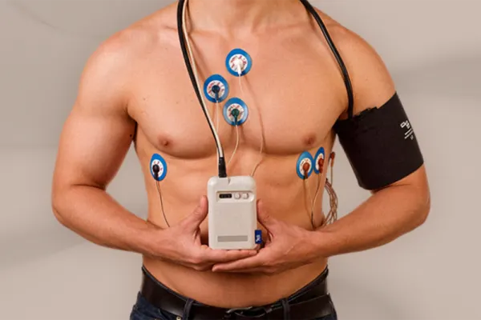
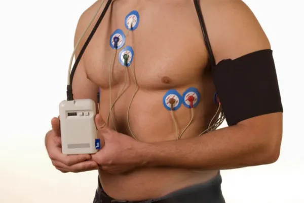
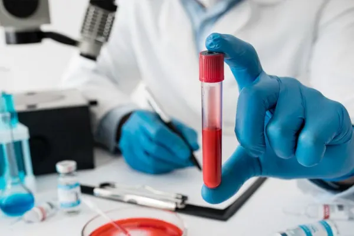
Além de exames avançados como:
- Ecocardiograma Transesofágico
- Eletroencefalograma com mapeamento cerebral
Como funciona o atendimento
Um processo pensado para ser mais simples, rápido e eficiente
- 01
Avaliação médica
Você realiza sua consulta e recebe a solicitação dos exames necessários
- 02
Realização dos exames
Pode realizar exames de imagem no CEDIM e exames laboratoriais com suporte do Hospital dos Acidentados
- 03
Diagnóstico completo
Com exames integrados, o médico tem mais clareza para definir a melhor conduta
- 04
Mais agilidade no cuidado
Menos deslocamentos e mais eficiência em todo o processo
Para quem é
Este atendimento é indicado para pessoas que:
Se identificou? Nossa equipe pode te orientar.
Agende seus exames agora- Recebeu indicação médica e busca um diagnóstico mais preciso para tomar decisões com segurança
- Está investigando sintomas persistentes, como dores, desconfortos ou alterações que ainda não foram esclarecidas
- Querem realizar um check-up mais completo, indo além dos exames básicos
- Deseja antecipar possíveis problemas e cuidar da saúde de forma preventiva
- Valoriza praticidade e busca realizar exames com mais agilidade e menos deslocamentos
- Prefere contar com uma estrutura integrada, com exames de imagem e suporte laboratorial no mesmo fluxo de atendimento
- Busca confiança nos resultados para seguir com o tratamento de forma mais segura
Corpo clínico
Por trás de cada exame realizado no CEDIM, existe uma equipe médica preparada para conduzir cada etapa com precisão, responsabilidade e atenção aos detalhes.
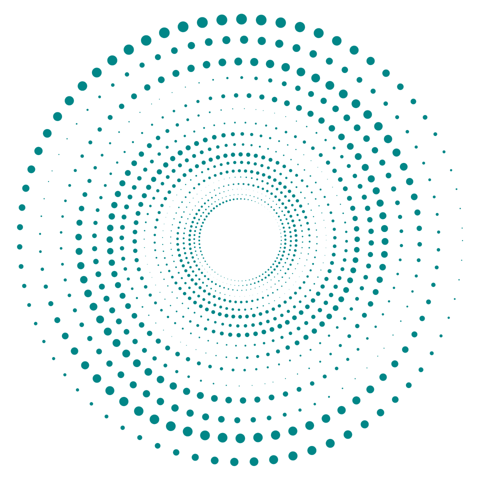
Depoimentos
Sempre próximos, sempre confiáveis, sempre para a nossa gente.
Fiz tomografia ontem, amei, fui muito bem atendida. Equipe maravilhosa. Muito rápido recomendo. Vocês são nota 10 Equipe Cedim!
Claudia De SousaMinha experiência com esta clinica foi muito boa. Tive celeridade em meu atendimento. Recomendo quem precisar dos serviços desta empresa.
Moacir Dos Santos-
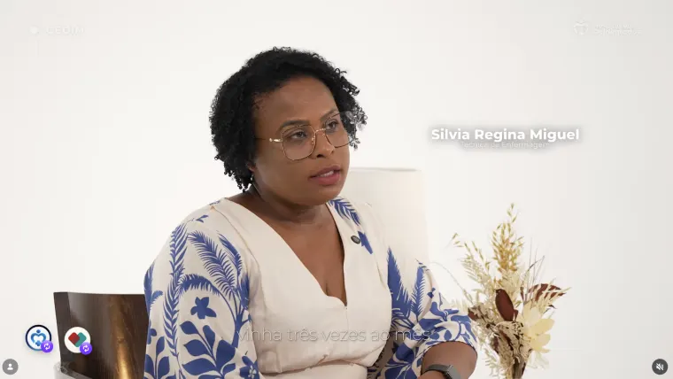
Depoimento em vídeoOutubro Rosa -
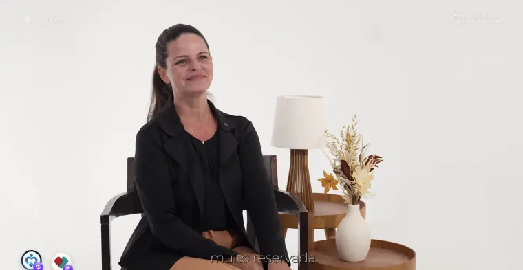
Depoimento em vídeoOutubro Rosa Atendimento no horário. Local bem higienizado. Recomendo 👍🏼
Eleandra FlorioÓtima, atendimento de excelência. Obrigada!
Maria José
Fazer seu exame pode ser mais simples do que você imagina
Muitas pessoas adiam exames por dúvidas sobre preparo, tempo de realização ou medo de não saber como funciona o procedimento.
Por isso, o CEDIM disponibiliza orientações completas para cada exame, ajudando você a entender todas as etapas antes do atendimento.
Assim, você realiza seus exames com mais tranquilidade, segurança e preparo adequado.
- Informações sobre preparo
- Orientações antes e depois do exame
- Tempo de realização
- Recomendações importantes
- Dúvidas frequentes sobre cada procedimento
Nossa estrutura
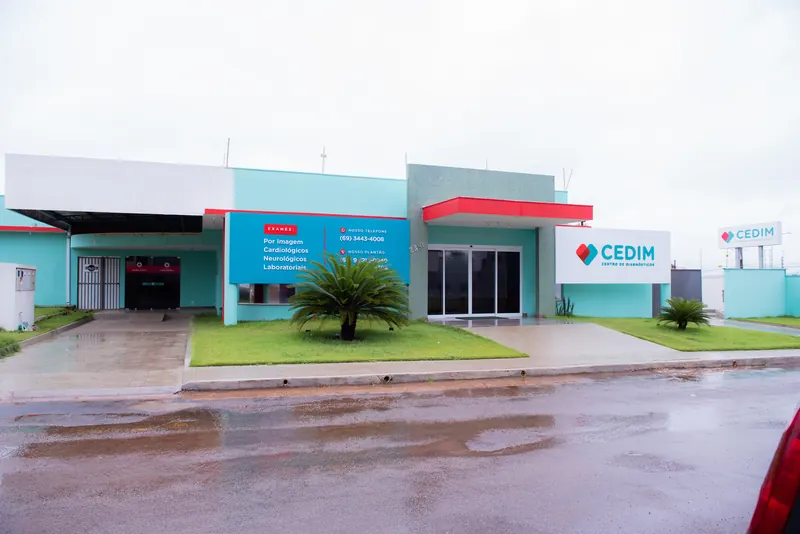
Fachada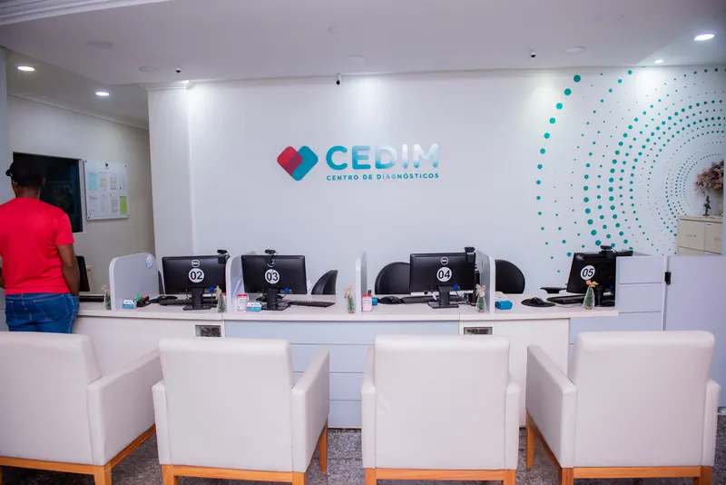
Recepção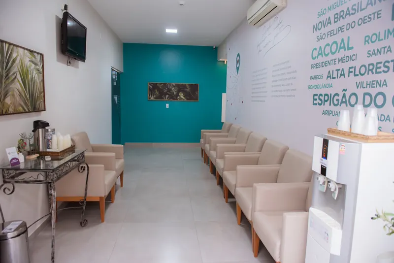
Sala de espera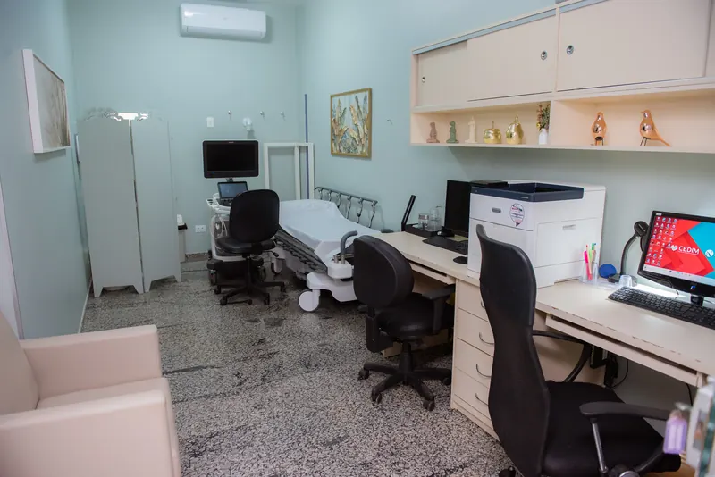
Sala de exame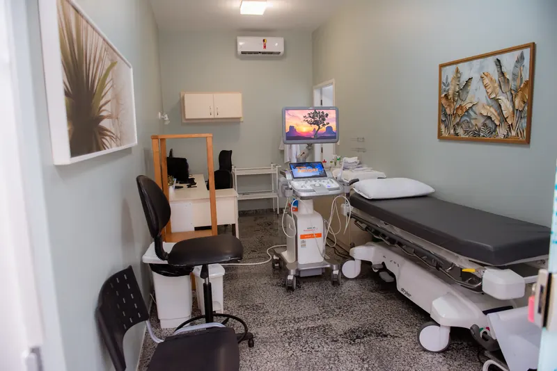
Ultrassonografia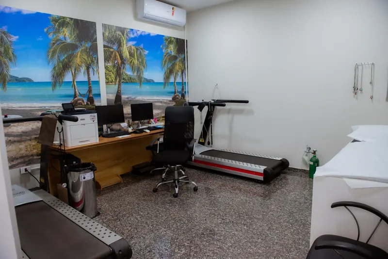
Teste ergométrico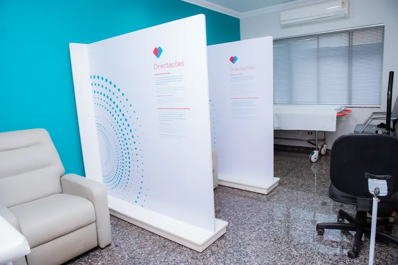
Sala de atendimento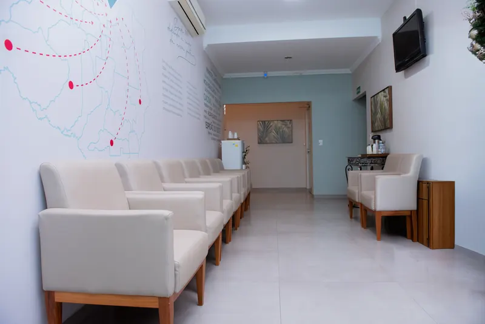
Sala de espera
Parceiros e convênios
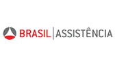
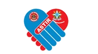
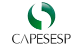
Perguntas frequentes
Posso fazer exames laboratoriais também?
Sim. Você conta com suporte laboratorial em parceria com o Hospital dos Acidentados.
Os exames são realizados no mesmo local?
Os exames de imagem são realizados no CEDIM e os laboratoriais contam com estrutura integrada ao Hospital dos Acidentados.
Demora para sair o resultado?
Buscamos sempre oferecer o máximo de agilidade, sem abrir mão da qualidade.
Os exames são seguros?
Sim. Utilizamos tecnologia avançada e equipe especializada.
Qual o horário de atendimento?
De segunda a sexta-feira, das 7h às 18h, e aos sábados, das 8h às 12h.
Preciso de pedido médico?
Os exames que exigem indicação clínica precisam de pedido médico. Ao agendar pelo WhatsApp, nossa equipe confere a sua solicitação e passa as orientações de preparo do exame.
Como recebo o resultado?
O resultado fica disponível para você e para o seu médico. Você também pode consultar online no portal de resultados do CEDIM.
Como agendar?
Basta clicar no botão e falar diretamente com nossa equipe pelo WhatsApp.
Como chegar
R. Quintino Bocaiúva, 2390, Sala A
Jardim Clodoaldo, Cacoal (RO), 76963-694
Anexo ao Hospital dos Acidentados.
Horário de Funcionamento:
- Segunda a sexta
- 7h às 18h
- Sábado
- 8h às 12h
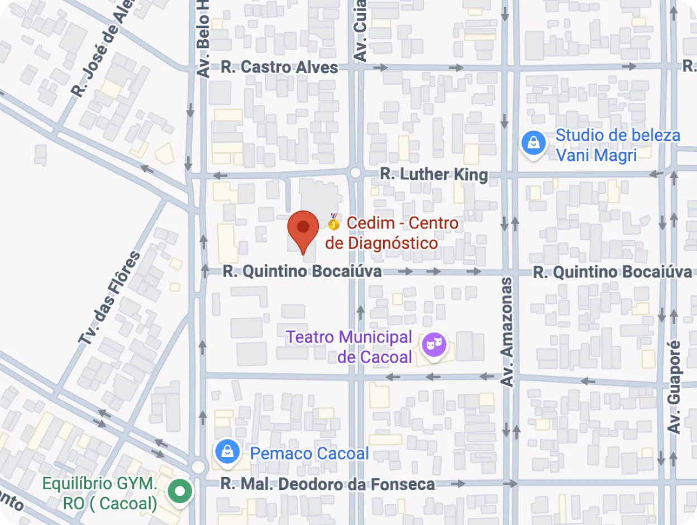